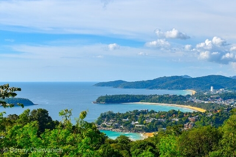

Phuket
By Bennypc - Own work, CC BY-SA 4.0, Link
Phuket is one of the most visited places in Thailand. I've never been there but I've heard good things about it.
By Bennypc - Own work, CC BY-SA 4.0, Link
Phuket is one of the most visited places in Thailand. I've never been there but I've heard good things about it.